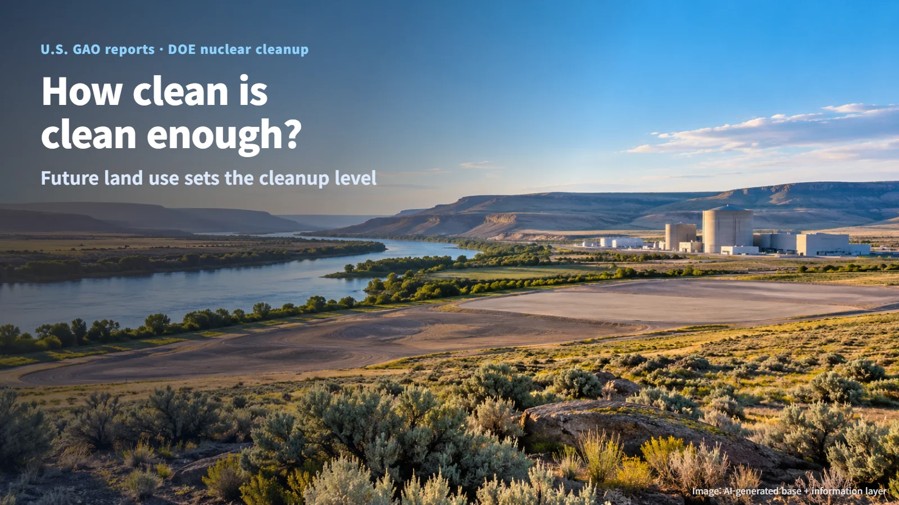
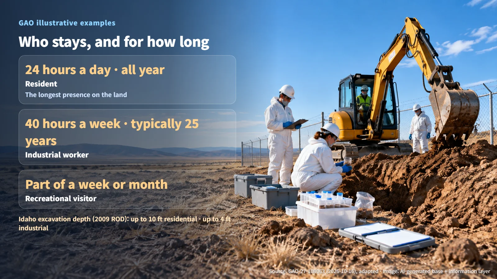
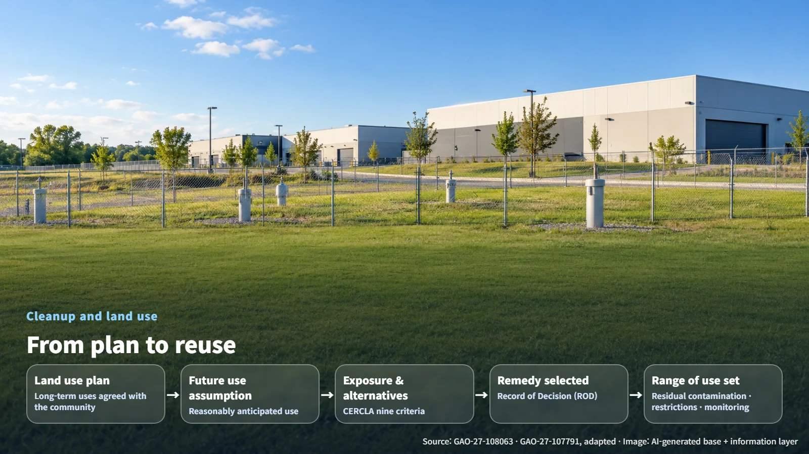

US Policy · Environmental Cleanup
How Clean Is Clean Enough? Future Land Use and the Cleanup of U.S. Nuclear Sites
Two GAO reports show how assumptions about who will use the land next shape cleanup levels, costs and schedules at DOE nuclear sites.
Editorial responsibility: GlobalNuclearNews
When an old factory site is slated for new use, the first question most people ask is simple: is that land really clean now? For a former nuclear site, the question carries extra weight. The answer depends on who will use the land in the future, and for how long. In October 2026, the U.S. Government Accountability Office (GAO) released two reports that take on exactly this question.

Fifteen Sites, a Cleanup Running to 2100
The U.S. Department of Energy (DOE) is responsible for cleaning up sites contaminated by decades of nuclear weapons production and research. According to DOE estimates cited by GAO, cleaning up the remaining 15 sites will cost $641 billion to $840 billion, with completion expected in 2100. This is a program measured in generations.
In one report (GAO-27-108063), GAO selected six of these sites—Oak Ridge, Paducah, Portsmouth, Savannah River, Hanford and Idaho—and compared their land use plans with the cleanup decisions actually made. The second report (GAO-27-107791) examined legal and regulatory barriers and policy options, offering three matters for congressional consideration and six recommendations to DOE and the Environmental Protection Agency (EPA). Together, the two reports converge on a single question: how do assumptions about future land use connect to cleanup costs, schedules and decision-making authority?
Who Uses the Land Next Sets the Cleanup Level
The starting point for any cleanup level is exposure. The same contamination delivers a different dose depending on who spends time on the land and for how long. GAO's illustrative examples make this concrete. An industrial worker spends 40 hours a week on site, typically over 25 years. A recreational visitor spends part of a week or a month there. A resident lives on the land 24 hours a day, all year round. That round-the-clock presence is why residential cleanup levels are the most stringent.

The process works in stages. First, the community's preferred long-term uses are set out in a land use plan developed in consultation with local stakeholders. Then, during the actual cleanup, DOE assumes a reasonably anticipated future use, evaluates exposure pathways (the routes by which contaminants travel through soil, water or air to reach people) and weighs cleanup alternatives before selecting a remedy. Under CERCLA, the federal law governing contaminated-site cleanup, alternatives are judged against nine criteria: protection of human health and the environment; compliance with applicable requirements; long-term effectiveness; reduction of toxicity, mobility or volume through treatment; short-term effectiveness; implementability; cost; state acceptance; and community acceptance.
The selected remedy and whatever contamination remains then determine how far the land can be used afterward. The plan guides the cleanup, and the cleanup in turn shapes the range of future uses.

What GAO Found at Six Sites: Hanford and Idaho Stand Out
At Oak Ridge, Paducah, Portsmouth and Savannah River, major contaminated areas were cleaned up to industrial standards, largely in line with the original plans. At Oak Ridge's ETTP area, industrial reuse is moving forward while certain parcels carry restrictions on well installation, groundwater access and excavation depth. The surface is put to industrial use, while contamination left below ground is managed through use restrictions.
Hanford and Idaho tell a different story. At Hanford, cleanup levels based on residential use were set across roughly one-third of the site. That figure describes the extent of the zones where cleanup levels were decided; GAO notes that only part of that area was actually contaminated and remediated.
At Idaho, the 1996 plan designated no residential land, yet cleanup levels for many contaminated areas were set on a residential assumption. DOE points to future technological advances, radioactive decay, public perception and tribal considerations as the background for that choice. The land use assumption translates directly into workload. Under the 2009 Record of Decision (ROD, the formal document that finalizes the selected remedy), future soil cleanup excavation reaches up to 10 ft in hypothetical residential areas and up to 4 ft in industrial areas.
So how much extra did the residential standard cost? At Hanford and Idaho, the additional cost of residential versus other uses has not been estimated. Officials explained that records of past excavation and disposal volumes by alternative are too limited to reconstruct the numbers retroactively.
GAO's Recommendations, the Agencies' Responses and What Comes Next
GAO's first recommendation is that DOE evaluate and document multiple future land use assumptions before selecting a remedy whenever significant cost or schedule benefits are expected. DOE disagreed. It holds that uncertain future uses can already be considered within existing procedures and that it will follow revisions to EPA guidance. GAO responded that settling on a single assumption before weighing costs can leave the benefits of other assumptions unevaluated. The debate centers on when multiple alternatives should be reviewed, and with what cost data.
EPA agreed with the recommendation to clarify its guidance on reviewing future land use assumptions, and both DOE and EPA agreed to establish an interagency expert task force to address high-cost, long-duration decisions and regulatory disputes. Mixed waste, which contains both radioactive and hazardous materials, is an area where the legal roles of DOE, EPA and the states can overlap. GAO also asked Congress to consider clarifying the scope of federal authority and the roles of agencies in future land use decisions.
For now, the process stands at the recommendation stage. Any change to the law or to cleanup standards will come through congressional legislation and follow-on procedures at each agency, and no firm timeline for implementing the recommendations has been set. The next things to watch are follow-up actions by DOE and EPA, whether Congress legislates, and public release of site-by-site alternative comparisons and long-term stewardship conditions. GAO also described reuse ideas such as energy development, nuclear fuel cycle hubs and AI data centers, along with their job and tax benefits, while pointing to the risks of diverting cleanup resources, recontamination and future DOE liability.
The answer to "how clean is clean enough" begins with an agreement about who will spend time on the land and for how long. Recording that agreement together with cost and schedule data is what will shape these lands decades from now.
Revision r001 · October 26, 2026. Editorial attribution added; article content and sources retained.